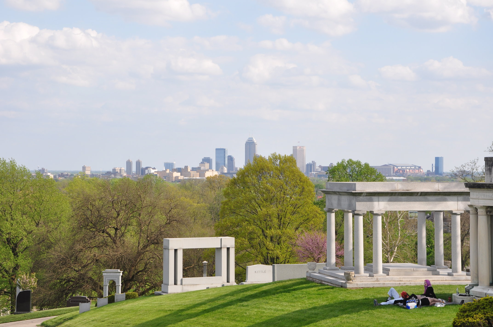
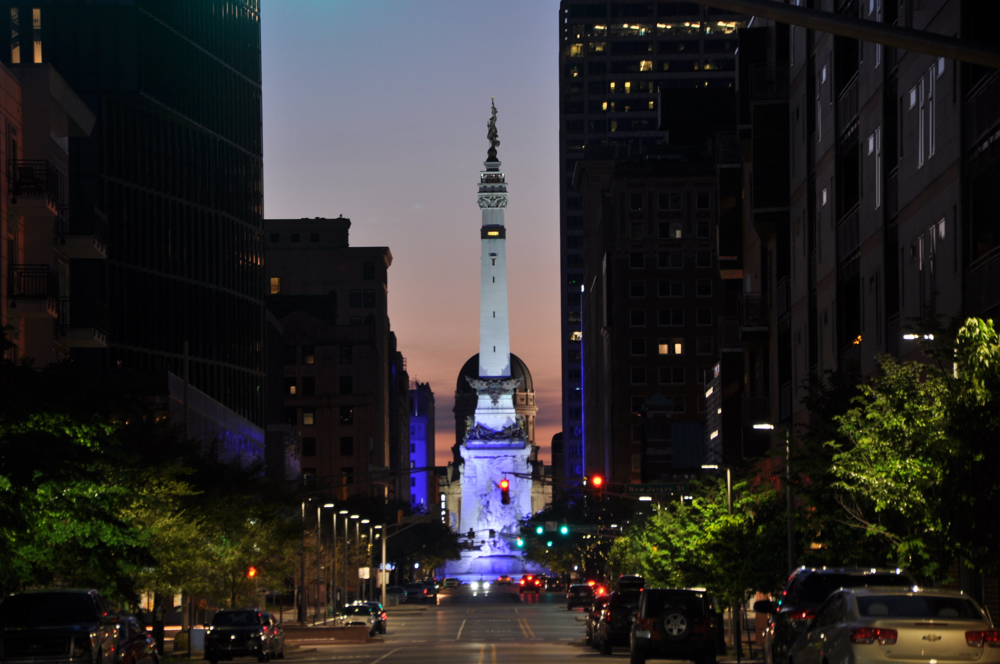
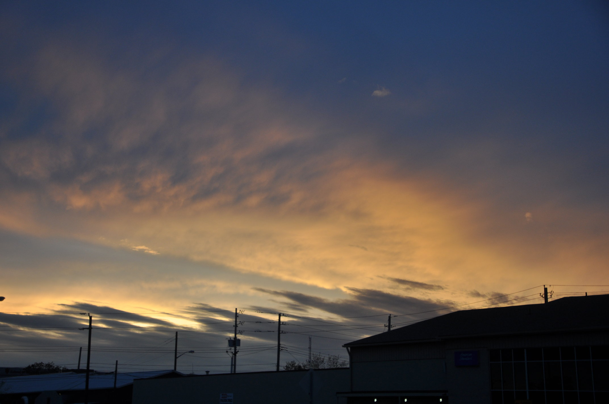

Indianapolis is the state capital and most populous city in Indiana. It
is the 17th most populous city in the US, with a metro population of
2.5 million
Indianapolis is home to multiple professional sports teams, and is
known for the world's largest single-day sporting event,
the Indianapolis 500.
About Indy

Things to Do
Indianapolis is home to world-renowned museums and arts organizations, such as the Indianapolis Symphony
Orchestra.
Indianapolis also maintains 211 parks and is home to the largest collection of war
monuments in the U.S. outside of Washington, D.C.
Where to Stay
Indianapolis has accommodations for every type of traveler, from name-brand hotels, one-of-a-kind art
hotels, and B&B's.
See our list of excellent and highly rated hotels, which is updated weekly. We are sure to have the perfect
place for you to stay.
Photo Gallery
Sunsets in Indianapolis are just one of the beautiful and picturesque images one can capture in
Indianapolis.
Check out our photo gallery of images taken in Indianapolis by photographer Bert Witzel, and come to the city
soon to capture your own image!